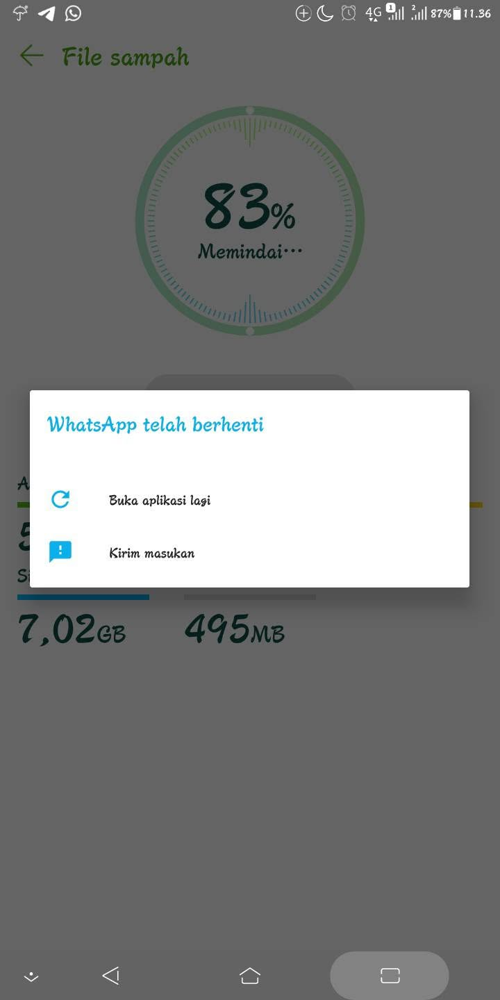
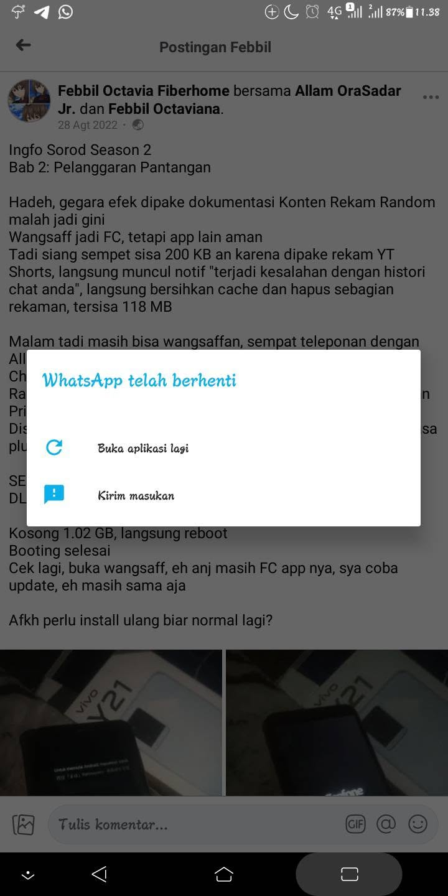
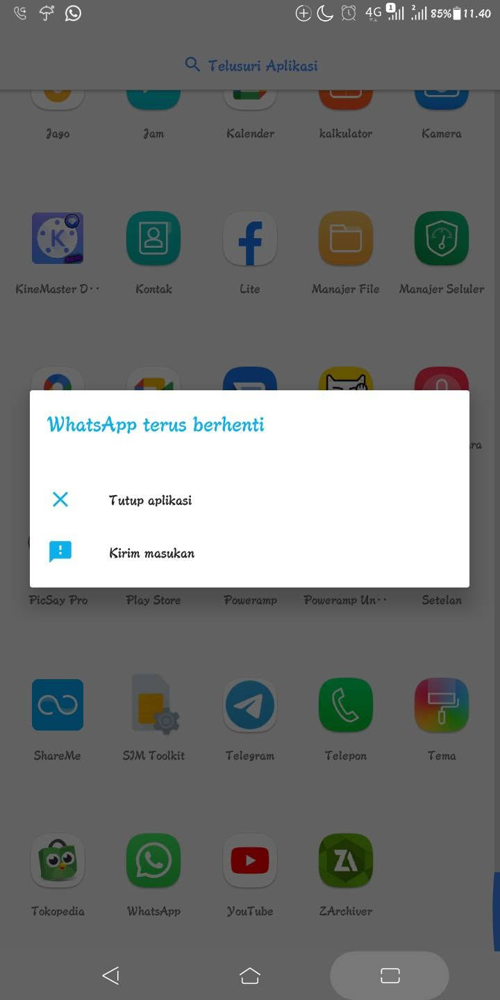
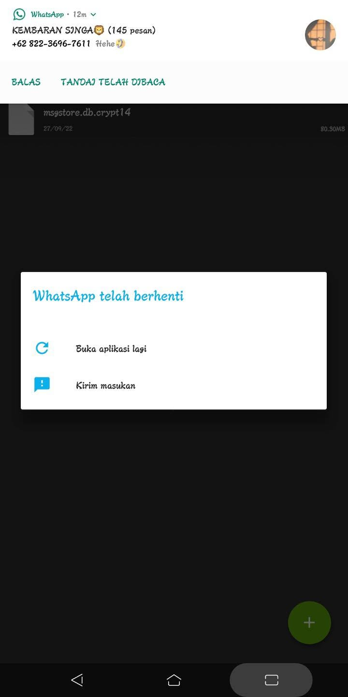

Hadeh, giliran mau buka grup WA CHI malah gini app nya, padahal sebelumnya masih bisa buka pas mau ingfokan batre ABC ke Allam Sisa penyimpanan internal saat ini (walaupun melanggar pantangan) di angka 400 MB an pasca backup lokal database WA secara manual, backup terakhir dia tgl 12 Oktober 2022Permasalahan di jilid 1:
Balik jumatan langsung install ulang dah bjir
Bab 2: Pelanggaran Pantangan



